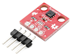

Basic examples
1. LED2, LED3 on board

First hello world example which turns on/off RED and GREEN diods on the IQRFBB-10 board. Enter example...
2. Digital Output

This example shows how to set HI/LO digital output. The DO has connected external LED. Enter example..
3. Digital Input
This example explains how to detect digital input on board PIN. Enter example...,
Standard Things
Standard things have pre-defined JSON API and all IQRF gateways know them. If you implement your device in TR module as Standard Light, Standard Binary Output, Standard Sensor and more you have ensured compatibility of your device with IOT world.
1. Standard Light
This example shows how to create "Standard light" from your board which means that entire world will know that your device is just a light and will be able to manage it (turn on/off, dim, get status and more). Your hardware design on the top of board is not limited. Enter example...
2. Standard Binary Output

This example shows how to create one or more standard binary outputs on the board. Enter example..
Others..
1. Hall Magnetic Sensor

/example-hall, this example shows how to connect Hall Magentic Sensor with the board and detect event.
2. Motion detection (ePir)
/example-ePir, this example shows how to connect motion sensor ePir to the board and detect event.
3. Bi-stable relay on board
/example-bistable-relay, this example shows how to switch bi-stable relay on board.
4. HTU21D - Temp & Humidity

Comming soon HTU21D...
/example-HTU21D, this example shows how to connect HTU21D Temperature and Humidity sensor to board.
5. GY-BME280 - Temp & Baro
Comming soon GY-BME280...
6. Ambient Light Sensor
Comming soon GY49...